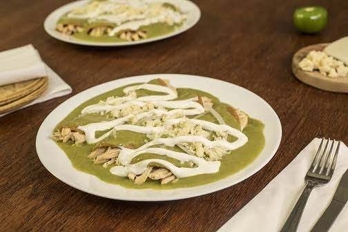

Home
Enchiladas Verdes

Descripción
Un platillo tradicional mexicano, lleno de sabor y perfecto para compartir en familia. Las enchiladas verdes combinan la acidez del tomate verde con el toque picante de los chiles, bañando unas deliciosas tortillas.
Ingredientes
- 500gr de tomate verde
- 3 pzs de chiles verdes
- 1 pz cebolla
- 1 diente de ajo
- Agua
- Aceite
- Sal al gusto
- 250g de tortillas
- Queso (panela, manchego u oaxaca) opcional
- Cubo de caldo de pollo o caldo líquido
- Crema (opcional)
Pasos
- Insertar los tomates y chiles a la cacerola con 900mL de agua y cocer hasta que esté suave.
- Sacar los tomates y chiles de la cacerola y colocarlo en el vaso de la licuadora con un poco de agua, y poner un pedacito de cebolla con la mitad de diente de ajo.
- Molerlo de 3 a 5 minutos hasta que no queden grumos.
- Lavar/enjuagar la cacerola para volver a usar, colocar lo molido y sazonarla con 1 cucharada de sal y el cubo de caldo de pollo o caldo líquido. Si se pone espesa, echar un chorro de agua y mezclarlo para que no se espese ni queme (Duración de 7 minutos).
- En un plato, doblar las tortillas en forma de quesadilla (depende de la cantidad que quieras) y después bañarlas en la salsa.
- EXTRA: Añade crema y/o queso para reducir lo picante si se pasó de sabor.
Utensilios necesarios
- Licuadora
- Cacerola
- Cuchara de cocina
- Plato